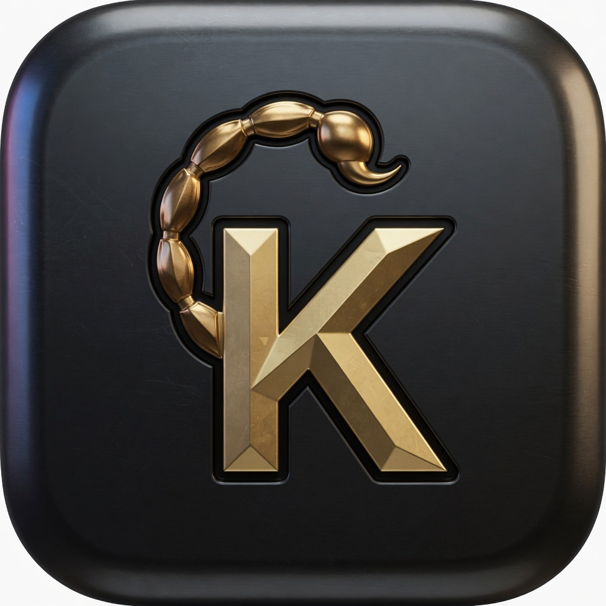

sdk.js?v=177
.k is who. Veyra is what they may do. The wallet signs. Kaspa settles.
Anyone can vibe-code a Kaspa PWA that looks like theirs — Google AI Studio, Cursor, Replit — by forking Scorpion. dApps do not learn 10,000 UIs. They detect alice.k on Connect the same way they detect Scorpion.
const wallets = await window.kcc20.discoverWallets();
// { info: { name, identity: 'alice.k', rdns: 'k.alice' }, provider }
await window.kcc20.connect({ identity: 'alice.k' });
const who = await window.kcc20.getIdentity();
// { name: 'alice.k', address: 'kaspa:q…', rdns }
Or listen: kaspa:announceProvider then kaspa:requestProvider. If info.identity ends in .k, show it as Connect wallet.
Fork KCC20-wallet. Keep the signer. Change the face. Set KCC20_DOTK and KCC20_RDNS. Deploy a PWA. Paste this prompt:
<script> window.KCC20_WALLET_ORIGIN = 'https://YOUR-HOST'; window.KCC20_DOTK = 'alice.k'; window.KCC20_RDNS = 'k.alice'; </script> <script src="https://YOUR-HOST/sdk.js?v=177"></script>